Procesos ARIMA
Previsión con Datos Temporales (GBIA)
Iván Arribas (Depto. Análisis Económico. Universitat de València)
Curso 2020-21
1 Introducción
Los modelos ARIMA han mostrado ser uno se los métodos de ajuste de series temporales más valiosos desde que fueran formalizados en 1976 por Box y Jenkins, en su libro Time series analysis, forecasting and control. Además, dieron las pautas a seguir en el ajuste de una serie temporal para alcanzar buenas predicciones (véase epígrafe 6).
En este tema y el siguiente, definiremos estos procesos y aprenderemos a identificarlos, estimarlos y hacer predicciones.
Los procesos ARIMA son ahora el tronco de una amplia familia de procesos que requieren menos hipótesis para su aplicación o ajustan mejor bajo diferentes hipótesis: ARCH, GARCH, NGARCH, IGARCH, EGARCH, GARCH-M, QGARCH, GJR-GARCH, TGARCH, fGARCH…
Los procesos ARIMA y los métodos de Alisado Exponencial son complementarios:
- Los modelos de Alisado lineales son casos especiales de modelos Arima,
- Los modelos de Alisado no lineales no tienen su contrapartida en modelos Arima
- Muchos modelos Arima no tiene contrapartida en los modelos de Alisado.
Pero antes de entrar en materia es necesario definir una serie de conceptos que permitirán entender mejor una serie temporal como una muestra de un proceso generador de datos (PGD).
2 Proceso estocástico
2.1 Definición e hipótesis sobre el proceso
Un proceso estocástico \(Y_t\) es (sin excesiva precisión) una variable aleatoria que corresponde a momentos sucesivos del tiempo. A diferencia de los temas previos, en este vamos a estimar modelos sobre procesos estocásticos. Sería el equivalente para series temporales al modelo de regresión lineal que viste en el primer semestre para datos transversales.
Al igual que en Predicción con datos transversales, la aplicación de estos modelos requiere del cumplimiento de una serie de hipótesis. Para el caso de series temporales el proceso debe ser estacionario, ergódico y normal.
2.1.1 Proceso estacionario
Un proceso es estacionario en sentido estricto cuando la distribución conjunta no varía al realizar un desplazamiento en el tiempo de todas las variables.
- Si \(F(Y_{t_1},..., Y_{t_k})\) es la función de distribución conjunta y \(h>0\), entonces el proceso es estacionario en sentido estricto si \[F(Y_{t_1},..., Y_{t_k}) = F(Y_{t_1+h},..., Y_{t_k+h})\]
Intuitivamente, la distribución de un proceso estocástico es independiente del momento del tiempo.
Comprobar si un proceso es estacionario en sentido estricto es muy difícil, así que vamos a encontrar condiciones suficientes: estacionariedad en media y en sentido amplio (covarianza). Bajo normalidad un proceso estacionario en sentido amplio también lo será en sentido estricto.
Proceso estacionario en media
Un proceso es estacionario en media (o de primer orden) si su nivel se mantiene en el tiempo: \[E[Y_t] = \mu \; \; \forall t\]
Proceso estacionario en sentido amplio
Un proceso (ya estacionario en media) es estacionario en sentido amplio, o de segundo orden, si sus momentos de orden dos no dependen del tiempo:
- La (auto)covarianza entre dos periodos de tiempo es finita y sólo depende del intervalo de tiempo transcurrido entre estos dos periodos: \[Cov[Y_t, Y_{t+k}] = E[(Y_t - \mu)(Y_{t+k} - \mu)] = \gamma_k,\,\,\,\forall t\]
Observa que la varianza será entonces \(Var[Y_t] = E[(Y_t - \mu)^2] = \gamma_0\).
La figura 1 muestra la serie Nacimientos que no es estacionaria ni en media, ni en varianza. No lo es en media por que presenta tendencia y, por tanto, el valor medio de la serie cambia en el tiempo; y no lo es estacionaria en varianza por que al inicio de la serie los datos presenta más variabilidad que a finales del siglo pasado.
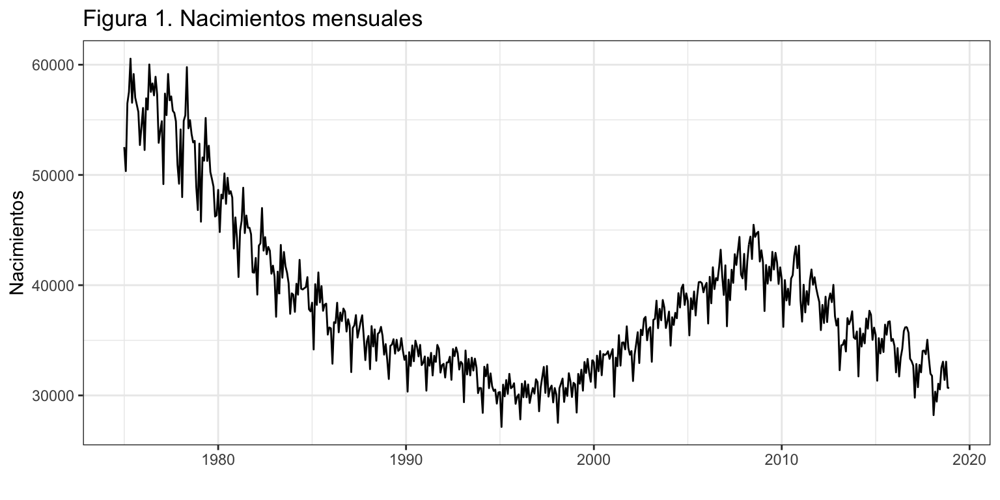
Proceso ergódico
Para que un proceso sea ergódico las observaciones nuevas tienen que aportar suficiente información para que la varianza del valor medio converja a 0.
Una condición necesaria, pero no suficiente, para que un proceso estacionario sea ergódico es: \[\lim_{k\rightarrow \infty} \gamma_k = 0.\] Es decir, que el pasado cada vez ayuda menos a entender el presente.
Normalidad
Asumiremos que el error del modelo se distribuye como una variable aleatoria normal. Esta hipótesis se puede relajar si la serie tiene suficientes datos.
3 Transformaciones de una serie
3.1 Ideas generales
Una serie temporal \(\{y_t\}_{t=1}^T\) no tiene porque verificar las condiciones de estacionariedad y ergodicidad. A continuación, veremos una serie de transformaciones que convierten una serie no estacionaria en estacionaria; no ergódica en ergódica.
En el panel superior de la figura 2 vuelves a tener la serie de nacimientos, que denominaremos \(y_t\), y en panel inferior tienes la diferencia de la transformación logarítmica de la serie, \(log(y_t) - log(y_{t-1})\). La serie nacimientos no es estacionaria en media ni en varianza, pero la transformación logarítmica y la diferencia han logrado que sea estacionaria en ambos sentidos.
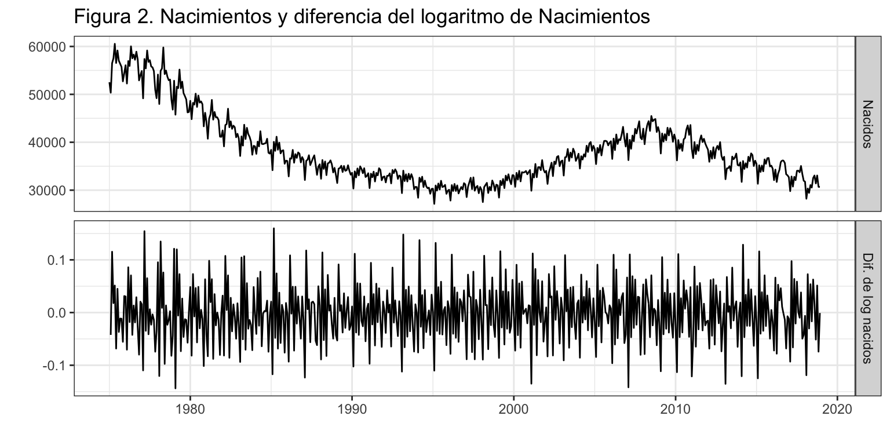
3.2 Diferenciación
La diferenciación permite transformar una serie no estacionaria en media en estacionaria en media.
Diferenciar de orden \(k\) consiste en restar a la observación de un periodo la de \(k\) periodos antes: \[\nabla_k y_t = y_t - y_{t-k}.\]
Diferenciación regular (\(k=1\))
Un caso concreto es la diferenciación regular o diferenciación de orden uno, que consiste en restar a la observación de un periodo la del periodo precedente: \[\nabla y_t = y_t - y_{t-1}.\]
Si \(\nabla y_t\) no fuera estacionaria, se diferenciaría (regularmente) una segunda vez para obtener una doble diferenciación de primer orden: \[\nabla^{2} y_t = \nabla(\nabla y_t) = \nabla y_t - \nabla y_{t-1} = (y_t - y_{t-1}) - (y_{t-1} - y_{t-2}) = y_t - 2y_{t-1} + y_{t-2}\]
En la práctica una sola diferenciación suele ser suficiente para obtener la estacionariedad en media; diferenciar dos veces es excepcional; y diferenciar tres o más veces no se da.
Diferenciación estacional (\(k=m\))
Existe la diferencia estacional, que consiste en restar a la observación de un periodo la observación precedente de la misma estación. Si el orden estacional es \(m\), entonces la diferencia estacional de \(y_t\) es \[\nabla_m y_t = y_t - y_{t-m}.\] Una serie no estacionaria en media puede pasar a serlo tras diferenciarla estacionalmente. Es decir, cualquiera de las dos diferenciaciones (regular o estacional) o ambas a la vez son alternativas para obtener la estacionariedad en media.
Además, la diferenciación (regular, estacional o ambas) también permite alcanzar la ergodicidad.
La figura 3 muestra un ejemplo de diferenciación regular y/o estacional. En el primer panel aparece la serie original Nacimientos \(y_t\); el segundo panel muestra la serie diferenciada regularmente \(\nabla y_t\); en el tercer panel la serie diferenciada estacionalmente \(\nabla_m y_t\); y en el cuarto panel muestra la serie diferenciada regular y estacionalmente \(\nabla\nabla_m y_t\).
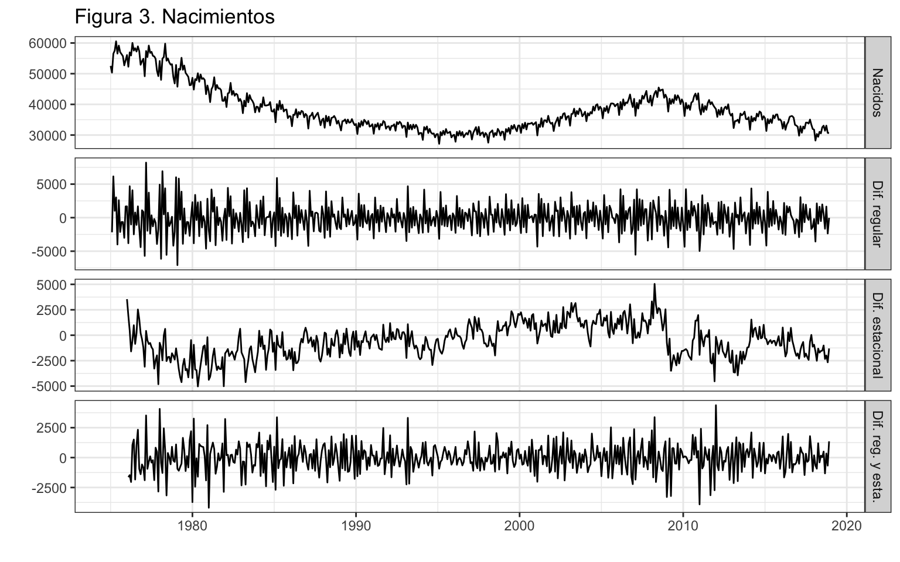
¿Qué transformación para nacimientos consideras que genera una serie estacionaria, tanto en media como en varianza? Siempre hay un cierto grado de subjetividad en la elección de las diferencias que hay que aplicar a una serie. En la figura 3 podemos considerar que la diferenciación regular (panel 2) es suficiente para lograr la estacionariedad en media y en varianza y terminar el proceso de diferenciación. Pero también podemos considerar que la serie es estacionaria en media pero no lo suficiente en varianza, y optar por la doble diferenciación, regular y estacional (panel 4).
Diferenciación con R
R dispone de la función diff para diferenciar una serie:
diff(x)calcula la diferencia regular o de orden \(1\), \(\nabla y_t\)diff(x, lag = k)calcula la diferencia de orden \(k\), \(\nabla_k y_t\)diff(x, lag = k, difference = d)calcula \(d\) diferencias de orden \(k\), \(\nabla_k^d y_t\)
Si necesitas calcular una diferencia regular y otra estacional, \(\nabla\nabla_m y_t\), debes usar diff(diff(x, lag = m)). El orden de las diferenciaciones no cambia el resultado.
Además, en forecast está disponible las funciones ndiffs y nsdiffs que estiman el número de diferencias regulares y estacionales, respectivamente, necesarias para que una serie sea estacionaria. Para la primera usa un contraste de raíces unitarias (que no veremos en este curso) y para la segunda un criterio ad-hoc.
Operador Retardo
Definimos el operador retardo \(L\) como \(Ly_t = y_{t-1}\), es decir, retrasa un periodo la serie. En inglés se denomina lag operator (L) o backward shift (B)
Así, se tiene que \[L^k y_t = y_{t-k}\] y por tanto que \[ \begin{aligned} \nabla y_t & = y_t - y_{t-1} = y_t - Ly_t = (1-L)y_t \\ \nabla^d y_t & = (1-L)^d y_t \\ \nabla_m y_t & = (1-L^m) y_t \\ \nabla_m^D y_t & = (1-L^m)^D y_t \end{aligned} \]
La siguiente tabla muestra un sencillo ejemplo del efecto del operador retardo sobre la serie \(y_t\)| y | lag1_y | lag2_y | lag3_y |
|---|---|---|---|
| 1 | NA | NA | NA |
| 2 | 1 | NA | NA |
| 3 | 2 | 1 | NA |
| 4 | 3 | 2 | 1 |
| 5 | 4 | 3 | 2 |
| 6 | 5 | 4 | 3 |
| 7 | 6 | 5 | 4 |
3.3 Transformación logarítmica
Si la serie original no es estacionaria en sentido amplio –por ejemplo porque la amplitud estacional crece con el nivel de la serie–, es posible obtener la estacionariedad por medio de transformaciones simples.
La transformación logarítmica de una serie es una alternativa. La figura 4 muestra la serie Nacimientos y su logaritmo. La variabilidad estacional con la transformación logarítmica (panel inferior) es menor que en la serie original (panel superior).
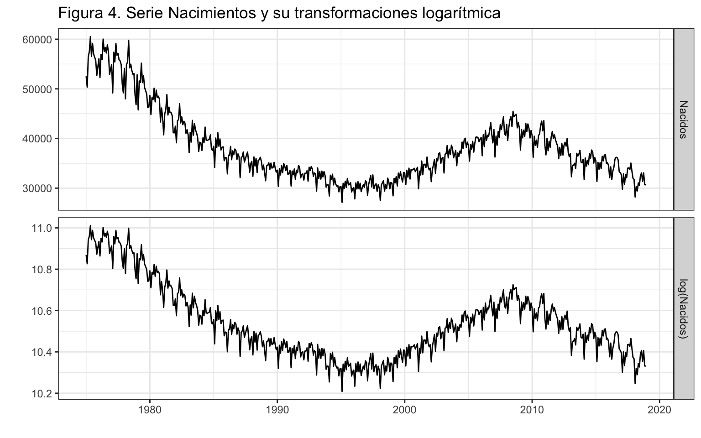
Nota: la transformación logarítmica es un caso concreto de otra más general, la transformación de Box-Cox que no veremos en este curso: \[ z_t = \begin{cases} (y_t^{\lambda}-1)/\lambda & \,\,\,\lambda \neq 0 \\ \log(y_t) & \,\,\, \lambda = 0 \end{cases} \]
Se puede demostrar que \(\lim_{\lambda \rightarrow 0} \;\; (y_t^{\lambda}-1)/\lambda = log(y_t)\).
El argumento lambda que hemos usado en algunas funciones de la librería forecast hace referencia al parámetro \(\lambda\) de la transformación Box-Cox. Siempre lo hemos fijado a cero, indicando la transformación logarítmica.
3.4 Diferencia, Logaritmo y Tasa de variación
La transformación \(\nabla y_t\) se puede interpretar como variaciones en nivel, pero \(\nabla^2 y_t\) no tiene ninguna interpretación. No conviene perder de vista la interpretabilidad de las observaciones.
Cuando una serie tiene que ser diferenciada dos veces para conseguir su estacionariedad, vale la pena probar una transformación alternativa que sea interpretable: \(\nabla \log(y_t)\) o \(\nabla_m \log(y_t)\).
Por un lado, \[\nabla \log(y_t) = \log(y_t) - \log(y_{t-1}) = \log\big(\frac{y_t}{y_{t-1}} \big) \approx \frac{y_t}{y_{t-1}} - 1 = \frac{y_t - y_{t-1}}{y_{t-1}} =TV y_t.\]
Por ejemplo, para una serie mensual la diferencia regular del logaritmo (natural) es la Tasa de Variación Mensual de la serie \((\nabla \log(y_t)=TVM y_t)\), que tiene una clara interpretación como variación porcentual.
Por otro lado, \[\nabla_m \log(y_t) \approx \frac{y_t - y_{t-m}}{y_{t-m}} =TV_m y_t.\]
Es decir, para una serie mensual la diferencia estacional del logaritmo es la Tasa de Variación Anual de la serie \((\nabla_{12} \log(y_t)=TVA y_t)\).
4 Función de autocorrelación
Si la serie es estacionaria y ergódica, el valor medio de la serie es constante y, por tanto, no informativo. Son las covarianzas los que caracterizan el proceso estocástico.
Recordemos que \(\gamma_k=Cov(y_t,y_{t-k})\) es la autocovarianza de orden k. Por tanto \(\gamma_0\) es la varianza de la serie \(y_t\). Sea \(\rho_k\) la autocorrelación se orden \(k\). Se puede verificar que: \[\rho_k = cor(y_t, y_{t-k}) =\frac{\gamma_k}{\gamma_0}.\]
- \(\rho_1\) mide la información que se transmite de un periodo al siguiente periodo.
- \(\rho_k\) mide la información que se transmite k periodos hacia adelante.
Las autocorrelaciones caracterizan el proceso estocástico, y la función de autocorrelación o correlograma (FAC, o ACF en inglés) es el gráfico de \(r_k\) contra \(k\), donde \(r_k\) es la estimación de \(\rho_k\) obtenida con las observaciones.
La figura 5 muestra la FAC para la serie Nacimientos y algunas de sus transformaciones. Observa el diferente uso del argumento lag: en la función diff indica el orden de la diferenciación, y en la función ggAcf indica el orden máximo de la autocorrelación. La primera columna muestra la FAC para Nacimientos y varias diferenciaciones, mientras que la segunda columna muestra la FAC para el logaritmo de los nacimientos y sus diferenciaciones. Se puede observar que:
- La FAC de una serie y de su transformación logarítmica son muy similares.
- En los paneles de la primera y tercera fila las autocorrelaciones decrecen muy lentamente, indicando que la serie analizada no es estacionaria ni ergódica.
- En los paneles de la segunda fila las autocorrelaciones de orden estacional (12, 24,…) también decrecen lentamente, indicando que la serie analizada no es ergódica.
- Solo la doble diferenciación regular y estacional de la serie (original o su logaritmo) muestran un rápido descenso en los coeficiente de autocorrelación (paneles de la última fila), indicando que la serie así transformada es estacionaria en media y ergódica.
ggAcf(nacimientos, lag = 48)
ggAcf(log(nacimientos), lag = 48)
ggAcf(diff(nacimientos), lag = 48)
ggAcf(diff(log(nacimientos)), lag = 48)
ggAcf(diff(nacimientos, lag = 12),lag = 48)
ggAcf(diff(log(nacimientos), lag = 12), lag = 48)
ggAcf(diff(diff(nacimientos, lag=12)), lag = 48)
ggAcf(diff(diff(log(nacimientos), lag=12)), lag = 48)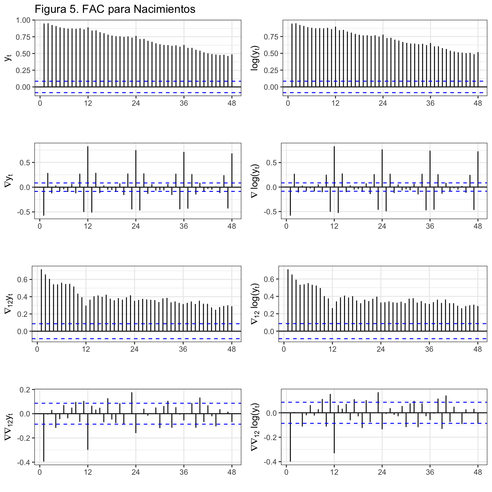
También podemos pedir R que nos sugiera los órdenes de diferenciación con las funciones ndiffs y nsdiffs.
ndiffs(nacimientos)[1] 1nsdiffs(nacimientos)[1] 1Si queremos ver los valores numéricos de las autocorrelaciones debemos añadir a la función ggAfc el argumento plot = FALSE. Para la serie doblemente diferenciada vemos que las relaciones más elevadas se dan para un retardo (\(r_{1}=-0.396\)) y para 12 retardos (\(r_{12}=-0.298\)), el dato que más se parece a los nacimientos de un mes son los nacimientos del mes previo y los nacimientos del mismo mes del año previo.
ggAcf(diff(diff(nacimientos), lag = 12), lag=12, plot = FALSE)
Autocorrelations of series 'diff(diff(nacimientos), lag = 12)', by lag
0 1 2 3 4 5 6 7 8 9 10
1.000 -0.396 -0.006 0.031 -0.117 -0.045 0.072 -0.038 0.050 0.097 -0.067
11 12
0.105 -0.298 Las bandas azules de la FAC muestran el intervalo de confianza al 95% (IC95). Si \(\rho_k = 0\), la distribución del estimador \(r_k\) se distribuye aproximadamente como una normal de media \(-1/T\) y varianza \(1/T\). Las líneas punteadas de la FAC están dibujadas en las posiciones \(\frac{-1}{T} \pm \frac{1.96}{\sqrt{T}}\).
Si un \(r_k\) cae fuera del IC95, hay evidencia para rechazar la hipótesis nula de que \(\rho_k = 0\) a un nivel del 5%. Recordemos que incluso si todos los \(\rho_k\) son cero, cabe esperar que un 5% de sus estimaciones \(r_k\) caigan fuera del IC95.
Los \(\rho_k\) no son independientes. Si uno cae fuera del IC95, es más probable que los valores vecinos caigan también fuera.
5 Procesos ARIMA
ARIMA surge de combinar las siglas de tres procesos diferentes: AR de AutoRegresive, I de Integrated y MA de Moving Average. Veamos cada uno de estos tres conceptos por separado y luego su combinación.
A lo largo de lo que resta del tema asumiremos que:
\(\{y_t\}_{t=1}^T\) es una realización de un proceso estocástico desconocido.
El proceso estocástico es estacionario en sentido amplio: \[E[y_t] = \mu < \infty \;\;\; \forall t,\] \[Cov[y_t, y_{t-k}] = \gamma_k \;\;\; \forall k.\]
El proceso estocástico es ergódico, o su condición suficiente: \[\lim_{k \rightarrow \infty} \gamma_k = 0.\]
5.1 Procesos autorregresivos AR(p)
Definición
El modelo general autorregresivo de orden p, \(y_t \sim AR(p)\) viene definido por \[y_t=c + \phi_1 y_{t-1} + \phi_2 y_{t-2} + ... + \phi_p y_{t-p} + \varepsilon_t,\] que usando el operador retardo queda \[(1 - \phi_1 L - \phi_2 L^2 - ... - \phi_p L^p)y_t = c + \varepsilon_t\] En este y en cualquier proceso ARIMA, al polinomio en \(L\) que acompaña a \(y_t\) se le denomina polinomio autorregresivo.
Se suele asumir que el error del modelo \(\varepsilon_t\) verifica las hipótesis estándar de media cero, incorrelación, homocedasticidad e idéntica distribución: \(\varepsilon_t \sim iid(0, \sigma^2)\). En este curso no vamos a prestar atención a este conjunto de hipótesis porque no jugarán ningún papel en la elección del modelo óptimo –aquel con mejores predicciones.
Ejemplos
- \(y_t \sim AR(1): \;\;y_t = c + \phi_1 y_{t-1} + \varepsilon_t\) o \((1 - \phi_1 L)y_t = c + \varepsilon_t\)
- \(y_t \sim AR(2): \;\;y_t = c + \phi_1 y_{t-1} + \phi_2 y_{t-2} + \varepsilon_t\) o \((1 - \phi_1 L - \phi_2 L^2)y_t = c + \varepsilon_t\)
5.2 Procesos en medias móviles MA(q)
Definición
El modelo general en medias móviles de orden q, \(y_t \sim MA(q)\) viene definido por \[y_t=c + \varepsilon_t + \theta_1 \varepsilon_{t-1} + \theta_2 \varepsilon_{t-2} + ... + \theta_q \varepsilon_{t-q},\] que usando el operador retardo queda \[y_t = c + (1 + \theta_1 L + \theta_2 L^2 + ... + \theta_q L^q) \varepsilon_t\]
Ejemplos
- \(y_t \sim MA(1): \;\;y_t = c + \varepsilon_t + \theta_1 \varepsilon_{t-1}\) o \(y_t = c + (1 + \theta_1 L)\varepsilon_t\)
- \(y_t \sim MA(2): \;\;y_t=c + \varepsilon_t + \theta_1 \varepsilon_{t-1} + \theta_2 \varepsilon_{t-2}\) o \(y_t = c + (1 + \theta_1 L + \theta_2 L^2)\varepsilon_t\)
5.3 Procesos ARMA(p,q)
Definición
El modelo general \(y_t \sim ARMA(p,q)\) viene dado por \[y_t = c + \phi_1 y_{t-1} + \phi_2 y_{t-2} + ... + \phi_p y_{t-p} + \theta_1 \varepsilon_{t-1} + \theta_2 \varepsilon_{t-2} + ... + \theta_q \varepsilon_{t-q}+ \varepsilon_t,\] que usando el operador retardo queda \[(1 - \phi_1 L - ... - \phi_p L^p)y_t = c + (1 + \theta_1 L + ... + \theta_q L^q) \varepsilon_t.\]
Ejemplos
- \(y_t \sim ARMA(1, 1): \;\;y_t = c + \phi_1 y_{t-1} + \theta_1 \varepsilon_{t-1} + \varepsilon_{t}\) o \((1 - \phi_1 L)y_t = c + (1 + \theta_1 L)\varepsilon_t\).
- \(y_t \sim ARMA(0, 0): \;\;y_t = c + \varepsilon_{t}\). Si \(c = 0\), a este proceso se le denomina ruido blanco.
5.4 Proceso ARIMA(p,d,q)
Si la serie \(y_t\) no es estacionaria pero tras diferenciarla \(d\) veces se hace estacionaria, diremos que la serie es integrada de orden \(d\): \(y_t \sim I(d)\). Por tanto,
- una serie estacionaria se indicará como \(y_t \sim I(0)\)
- \(y_t \sim I(d)\) es equivalente a \(\nabla^d y_t = (1 - L)^d y_t \sim I(0)\)
Una serie \(y_t\) sigue un proceso \(ARIMA(p,d,q)\) si:
- \(y_t \sim I(d)\) (hay que diferenciarla \(d\) veces para hacerla estacionaria), y
- \(\nabla^d y_t \sim ARMA(p,q)\).
Entonces, podemos escribir: \[y_t \sim ARIMA(p,d,q): \;\;\; (1 - \phi_1 L - \ldots - \phi_p L^p)(1- L)^d y_t = c + (1 + \theta_1 L + ... + \theta_q L^q) \varepsilon_t.\]
Ejemplos
- \(y_t \sim ARIMA(1, 1, 1): \;\;(1 - \phi_1 L)(1- L) y_t = c + (1 + \theta_1 L) \varepsilon_t\) o \(y_t = c + y_{t-1} + \phi_1(y_{t-1} - y_{t-2}) + \theta_1 \varepsilon_{t-1} + \varepsilon_t\).
- \(y_t \sim ARIMA(0, 1, 0): \;\;(1- L) y_t = c + \varepsilon_t\) o \(y_t = c + y_{t-1} + \varepsilon_t\). Si \(c=0\), tenemos un paseo aleatorio; si \(c \neq 0\), tenemos un paseo aleatorio con deriva.
6 Aproximación de Box-Jenkins
La siguiente figura muestra el flujo de procesos asociado a la modelización por modelos ARIMA, con cuatro grandes áreas:
Identificación, que requiere primero transformar la serie para que sea estacionaria y ergódica, para después identificar los valores de p y q.
La FAC y la función de autocorrelación parcial (que no hemos visto) teóricas son diferentes en cada tipo de proceso. Idealmente, su estimación a partir de la serie temporal podría servir de ayuda en la identificación del proceso estocástico. En la práctica, la funciones estimadas son tan diferentes de las teóricas que resultan de muy poca ayuda.
Nosotros haremos uso de algunas funciones de auto identificación que nos ayudaran en este punto.
Estimación de los parámetros del modelo, incluidas las variables de intervención y obtención del error. El método usual de estimación de los parámetros es por máxima verosimilitud.
Validación de las hipótesis sobre el modelo. Analizaremos que no es necesaria más intervención y veremos la pertinencia de los parámetros del modelo (bien contrastando su significatividad o bien por alguna regla más sencilla).
Si la validación no se pasa, puede ser necesario volver al proceso inicial y realizar una nueva identificación del modelo.
Predicción e interpretación del modelo válido. Si las predicciones se alejan de los valores reales más de lo esperado o presentan sesgo, puede ser necesario identificar y estimar un nuevo modelo.

Identificación automática
El paquete forecast dispone de la función auto.arima() que localiza el mejor modelo basándose en el AIC corregido para pequeñas muestras (AICc). No hay que fiarse ciegamente de los resultados de esta función, pero ayuda en la identificación. Básicamente el algoritmo seguido es el siguiente:
- Determina el orden de diferenciación regular \(0 \leq d \leq 2\) usando la función
ndiffs. - Tras diferenciar la serie:
- se estiman una serie de modelos básicos predeterminados.
- se usa el criterio AICc para seleccionar el mejor de estos modelos.
- a partir del modelo seleccionado, se hacen pequeñas variaciones modificando en una unidad p y q y añadiendo/quitando la constante y se vuelve a seleccionar el mejor de los nuevos modelos.
- Se repite el paso 2 hasta que no se puede mejorar el AICc.
Cuando usemos esta función, debemos tener cuenta que:
- La función
auto.arimano permite constante si la suma de las diferenciaciones es 2 o superior. - Si se desea hacer una búsqueda exhaustiva entre todos los posibles modelos se debe usar el argumento
stepwise = FALSE. - Si se desea que el cálculo de AICc sea exacto (por defecto para ganar tiempo calcula una aproximación), se debe usar el argumento
approximation = FALSE. - Si se desea ver para todos los modelos analizados el valor de AICc, se debe incluir el argumento
trace = TRUE.
La función auto.arima tiende a sobre-parametrizar los modelos y es muy recomendable ayudarla indicando las diferenciaciones, la posible intervención…
7 Ejemplos
7.1 Títulos de libros y panfletos
Vamos a aplicar la metodología de Box-Jenkins a la serie Libros (número de títulos publicados anualmente en España desde 1993 hasta 2018).
libros <- read.csv2("./series/libros.csv", header = TRUE)
libros <- ts(libros[, 2], start = 1993, frequency = 1)
autoplot(libros,
xlab = "",
ylab = "",
main = "Figura 7. Títulos publicados")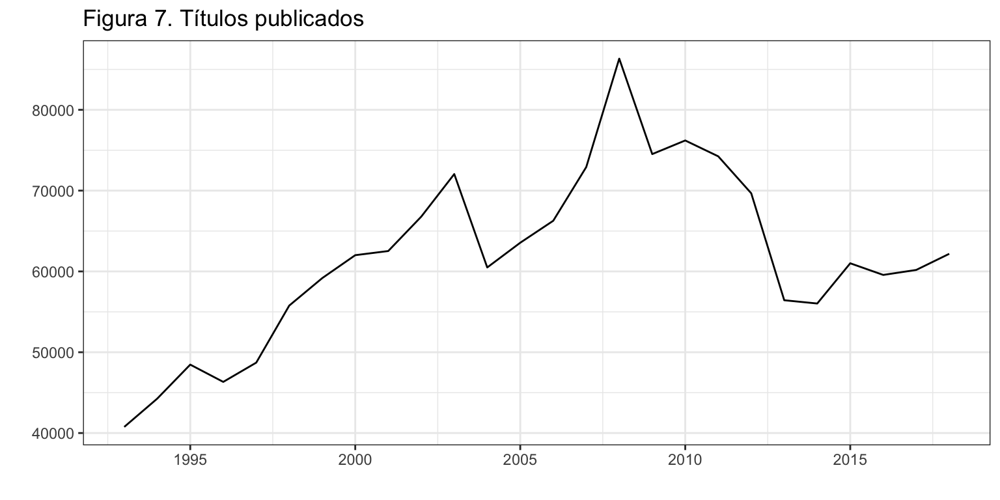
Transformación de la serie
El primer paso es transformar la serie original para que sea estacionaria. La figura 8 muestra la gráfica temporal y la FAC para la serie original y su primera diferencia.
autoplot(libros, xlab = "", ylab = "", main = "Libros")
autoplot(diff(libros), xlab = "", ylab = "", main = "Diferencia libros")
ggAcf(libros, xlab = "", ylab = "FAC", main = "")
ggAcf(diff(libros), xlab = "", ylab = "FAC", main = "")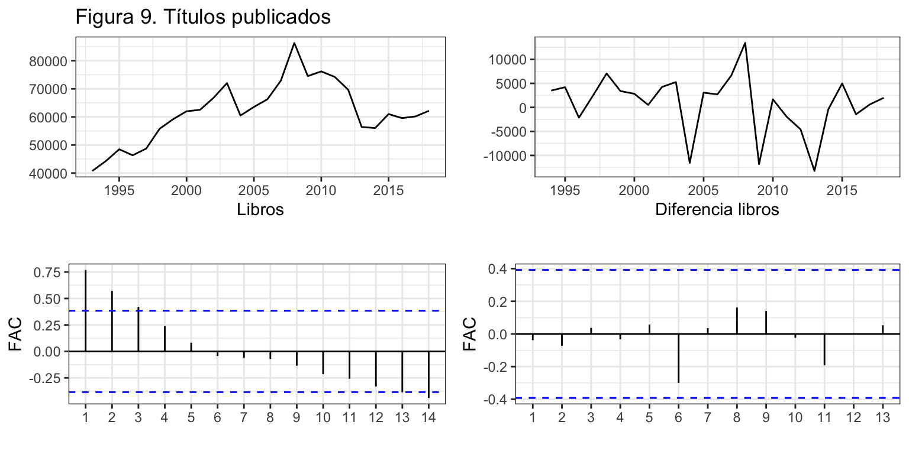
Además,
ndiffs(libros)[1] 1Podemos concluir que la primera diferencia de la serie Libros es estacionaria y ergódica. Es decir, \(d=1\) o \(libros \sim I(1)\).
Identificación
Tras diferenciar la serie, vamos a identificar los valores de \(p\) y \(q\). Este es el proceso más difícil y para simplificar las cosas vamos a ayudarnos de la función auto.arima.
auto.arima(libros, trace = TRUE)
ARIMA(2,1,2) with drift : Inf
ARIMA(0,1,0) with drift : 510.0603
ARIMA(1,1,0) with drift : 512.623
ARIMA(0,1,1) with drift : 512.6173
ARIMA(0,1,0) : 508.2017
ARIMA(1,1,1) with drift : Inf
Best model: ARIMA(0,1,0) Series: libros
ARIMA(0,1,0)
sigma^2 estimated as 36151817: log likelihood=-253.01
AIC=508.03 AICc=508.2 BIC=509.25Observa como la identificación automática da como mejor modelo \(p=q=0\). Es decir \(libros_t \sim ARIMA(0,1,0)\) sin deriva (sin constante), por tanto, sigue un paseo aleatorio: \[libros_t = libros_{t-1} + \varepsilon_t\]
Estimación
Aunque existe la función arima de stats, vamos a usar la función Arima de la librería forecast para estimar el modelo identificado por ser más versátil. El argumento order indica los valores de (p, d , q) como un vector y el argumento lógico include.constant indica si se desea incluir la constante \(c\) en el modelo. (Mira en la ayuda de la función Arima la diferencia entre los argumentos include.mean, include.drift e include.constant).
arima010 <- Arima(libros,
order=c(0, 1, 0),
include.constant = FALSE)
arima010Series: libros
ARIMA(0,1,0)
sigma^2 estimated as 36151817: log likelihood=-253.01
AIC=508.03 AICc=508.2 BIC=509.25Nuestro modelo estimado es: \(\widehat{libros}_t = libros_{t-1}\). La mejor predicción para un año, es la observación del año anterior, ¡el método ingenuo I!
Intervención
Se analiza si para algún año se observa un error atípico (por ejemplo 3 veces superior al error estándar). La figura 9 muestra que en este caso en dos periodos, años 2008 y 2013, el residuo sobrepasa los dos errores estándar pero queda lejos de los tres errores estándar así que asumiremos que no hay valores atípicos.
error <- residuals(arima010)
sderror <- sd(error)
autoplot(error, series="Error",
colour = "black",
xlab = "",
ylab = "Error",
main = "Figura 9. Error + Intervención") +
geom_hline(yintercept = c(-3, -2, 2, 3)*sderror,
colour = c("red", "green", "green", "red"),
lty = 2) +
geom_point() +
scale_x_continuous(breaks= seq(1993, 2019, 2)) 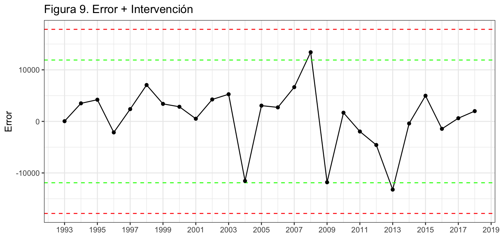
Medidas de error
El error medio es 5896 títulos (RMSE) y el error porcentual medio (MAPE) es 7.02%.
accuracy(arima010) ME RMSE MAE MPE MAPE MASE ACF1
Training set 825.49 5895.88 4450.03 1.23 7.02 0.96 -0.04Predicción
Una vez validado el modelo podemos pasar a realizar predicciones, en este caso a 5 años vista.
parima010 <- forecast(arima010, h = 5, level = 95)
parima010 Point Forecast Lo 95 Hi 95
2019 62180 50395.45 73964.55
2020 62180 45514.12 78845.88
2021 62180 41768.55 82591.45
2022 62180 38610.89 85749.11
2023 62180 35828.94 88531.06autoplot(parima010,
xlab = "",
ylab = "Títulos",
main = "Figure 10. Libros (1993-2018) y predicción (2019-2023)") +
scale_x_continuous(breaks= seq(1993, 2023, 2)) 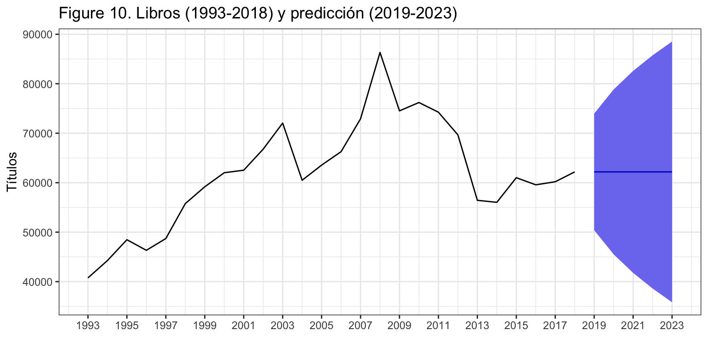
La figura 10 muestra la serie, la previsión y el intervalo de confianza al 95%. La predicción es constante e igual al último dato. En las series diferenciadas el intervalo de confianza de las predicciones crece muy rápidamente porque los errores se van acumulando sin ningún tipo de amortiguamiento.
7.2 Aforo de vehículos
Vamos a aplicar de nuevo la metodología de Box-Jenkins a la serie aforo de vehículos por Oropesa, carretera N-340, km. 996,48 (fuente Ministerio de Fomento). La serie es anual de 1960 a 2018 (59 datos).
aforo <- read.csv2("./series/aforo_oropesa.csv", header = TRUE)
aforo <- ts(aforo, start = 1960, freq = 1)
autoplot(aforo,
xlab = "",
ylab = "Vehículos (000)",
main = "Figura 11. Aforo de vehículos en N-340, Oropesa")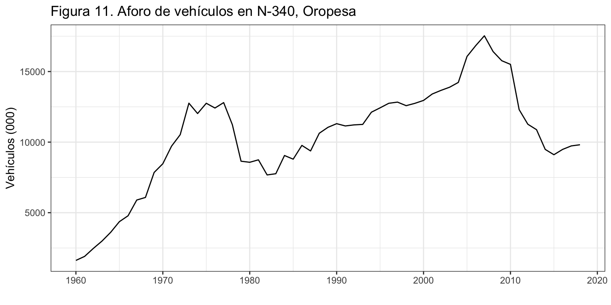
En este ejemplo incluiremos, por primera vez, intervención y veremos como la presencia de valores atípicos puede distorsionar el proceso de identificación. Por ello, es conveniente realizar en paralelo ambas actividades, identificar el proceso y detectar valores atípicos.
Transformación de la serie
La figura 12 muestra que la serie Aforo no es estacionaria. Así, el primer paso es transformar la serie original para que lo sea. La figura 12 no deja claro si la primera diferencia es suficiente para alcanzar la estacionariedad (gráficos de la segunda columna) o si es necesario una segunda diferenciación (gráficos de la tercera columna). Diferenciar más veces de las necesarias puede dificultar la identificación y la interpretación. Además, la función ndiffs aconseja una diferenciación. Así, optamos por fijar \(d = 1\).
autoplot(aforo,
xlab = "Aforo", ylab = "", main = "")
autoplot(diff(aforo),
xlab = "Una diferencia de Aforo", ylab = "", main = "")
autoplot(diff(aforo, differences = 2),
xlab = "Dos diferencias de Aforo", ylab = "", main = "")
ggAcf(aforo, xlab = "", ylab = "FAC", main = "")
ggAcf(diff(aforo), xlab = "", ylab = "FAC", main = "")
ggAcf(diff(aforo, differences = 2), xlab = "", ylab = "FAC", main = "")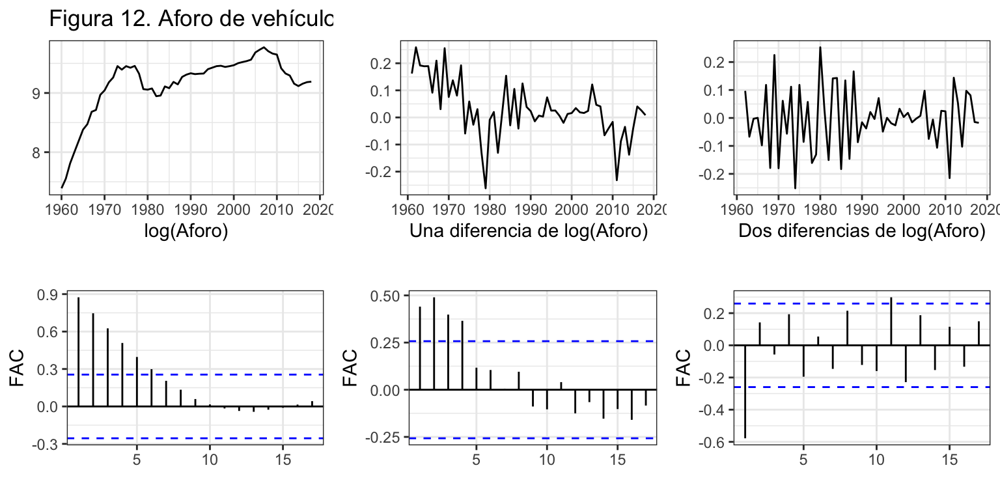
ndiffs(aforo)[1] 1Identificación y Estimación
Veamos a identificar los valores de \(p\) y \(q\) a partir de auto.arima. La función sugiere un proceso ARIMA(2,1,2).
auto.arima(aforo)Series: aforo
ARIMA(2,1,2)
Coefficients:
ar1 ar2 ma1 ma2
1.3262 -0.6626 -1.2701 0.9032
s.e. 0.1487 0.1277 0.0854 0.1718
sigma^2 estimated as 660067: log likelihood=-469.83
AIC=949.66 AICc=950.81 BIC=959.96Una forma rápida, aunque imprecisa, de determinar si un coeficiente es relevante (significativo) es compararlo con su error estándar (standard error, s.e). Si el coeficiente es mayor que dos veces su error estándar, hay evidencia de que es significativo. En la tabla Coefficients tienes en la primera fila el nombre de los coeficientes (ar en lugar de \(\phi\) y ma en lugar de \(\theta\)); su valor aparece en la segunda fila de la tabla; y los errores estándar en la tercera fila (encabezada por s.e.). Con esta regla, parece que todos los coeficientes estimados son significativos.
Vamos a ver la gráfica de los residuos del modelo ARIMA(2,1,2), vamos a identificar los valores extremos (intervención) y vamos a solicitar una vez más la auto-identificación pero incluyendo las variables ficticias asociadas a cada valor extremo.
arima212 <- Arima(aforo,
order = c(2, 1, 2))
error <- residuals(arima212)
sderror <- sd(error)
autoplot(error, series="Error",
colour = "black",
xlab = "",
ylab = "Error",
main = "Figura 13. Error + Intervención") +
geom_hline(yintercept = c(-3, -2, 2, 3)*sderror,
colour = c("red", "green", "green", "red"),
lty = 2) +
geom_point() +
scale_x_continuous(breaks= seq(1960, 2014, 4))
#time(error)[abs(error) > 2.5*sderror]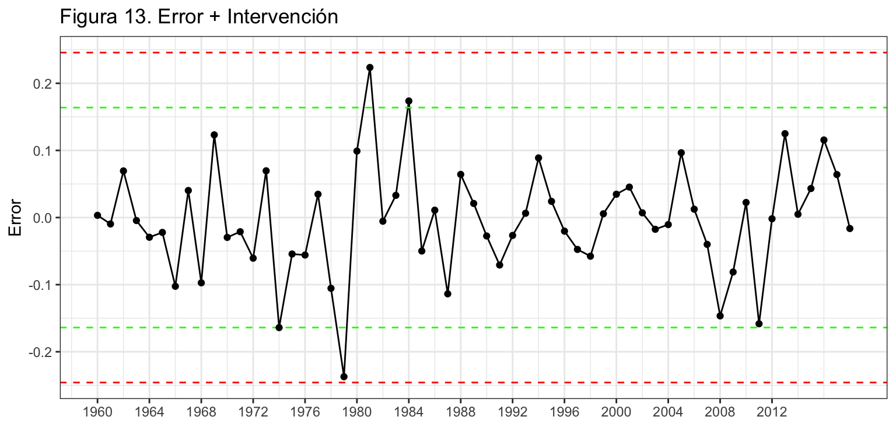
Se identifican dos posibles valores extremos en los años 1979 y 2011. Así, creamos una variable ficticia asociada a cada año, que denominaremos d1979 y d2011, y las incluimos en la auto-identificación.
d1979 <- 1*(time(error) == 1979)
d2011 <- 1*(time(error) == 2011)
auto.arima(aforo,
xreg = cbind(d1979, d2011))Series: aforo
Regression with ARIMA(2,1,0) errors
Coefficients:
ar1 ar2 d1979 d2011
0.1851 0.4432 -1717.785 -1194.8504
s.e. 0.1189 0.1215 492.910 459.3367
sigma^2 estimated as 602926: log likelihood=-466.48
AIC=942.96 AICc=944.11 BIC=953.26Observa como la inclusión de intervención modifica la auto-identificación, que ahora es un proceso ARIMA(2,1,0).
arima210 <- Arima(aforo,
order = c(2, 1, 0),
xreg = cbind(d1979, d2011))
arima210Series: aforo
Regression with ARIMA(2,1,0) errors
Coefficients:
ar1 ar2 d1979 d2011
0.1851 0.4432 -1717.785 -1194.8504
s.e. 0.1189 0.1215 492.910 459.3367
sigma^2 estimated as 602926: log likelihood=-466.48
AIC=942.96 AICc=944.11 BIC=953.26La figura 14 muestra que para ningún año se observa un error atípico. Es decir, no es necesaria más intervención.
error <- residuals(arima210)
sderror <- sd(error)
autoplot(error, series="Error",
colour = "black",
xlab = "",
ylab = "Error",
main = "Figura 14. Error + Intervención") +
geom_hline(yintercept = c(-3, -2, 2, 3)*sderror,
colour = c("red", "green", "green", "red"),
lty = 2) +
geom_point() +
scale_x_continuous(breaks= seq(1960, 2014, 4)) 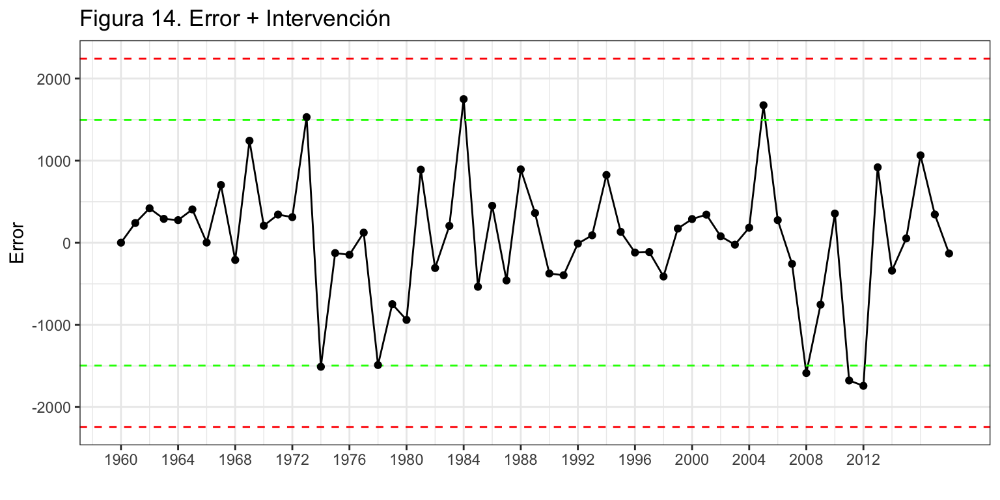
Validación
La identificación de errores atípicos –para la posterior inclusión de sus variables de intervención asociadas– ha sido un tanto arbitraria: ¿es atípico el error que supera las 2 desviaciones típicas, las dos y media, las tres desviaciones típicas?
A fin de poner un poco de objetividad en la decisión, podemos ver si sus coeficientes son significativos y dejar solo aquellas variables de intervención cuyo coeficientes lo sean. Aunque si la serie es suficientemente larga, también podríamos saltarnos este paso y dejar las variables de intervención que mejoren las predicciones extra-muestrales del modelo o las que recojan efectos con una gran evidencia.
La prueba de Wald permite contrastar si un subconjunto de coeficientes es significativo (se precisa la librería aod). Esta función requiere de tres argumentos: el vector de coeficientes (b), su matriz de covarianzas (Sigma) y la posición de los coeficientes cuya significatividad conjunta deseamos contrastar (Terms). Los dos primeros argumentos los podemos obtener del objeto arima210 con las funciones coef y vcov.
Por ejemplo, para ver la significatividad de la primera variable de intervención (tercer coeficiente del modelo), tendríamos
wald.test(b = coef(arima210),
Sigma = vcov(arima210),
Terms = 3)Wald test:
----------
Chi-squared test:
X2 = 12.1, df = 1, P(> X2) = 0.00049Con algo más de código se puede comprobar qué coeficientes estimados son significativos.
ancho <- max(nchar(names(coef(arima210)))) + 2
for(i in 1:length(coef(arima210))) {
wt <- wald.test(b = coef(arima210),
Sigma = vcov(arima210),
Terms = i)
cat("\nCoeficiente: ", format(names(coef(arima210))[i], width = ancho), "valor de p: ",
formatC(wt$result$chi2[3], digits = 4, format = "f"))
}
Coeficiente: ar1 valor de p: 0.1197
Coeficiente: ar2 valor de p: 0.0003
Coeficiente: d1979 valor de p: 0.0005
Coeficiente: d2011 valor de p: 0.0093Las dos variables de intervención son significativas y el coeficiente \(\phi_2\) (ar2) también. No es significativo el coeficiente \(\phi_1\) (ar1), pero no lo podemos eliminar. Los modelos Arima son modelos jerárquicos donde la presencia de un coeficiente significativo de cierto orden exige que los coeficiente de orden inferior estén presentes, sean o no significativos. En nuestro caso, como el coeficiente \(\phi_2\) es significativo, se debe dejar en el modelo el coeficiente \(\phi_1\).
Confirmamos que \(aforo_t \sim ARIMA(2,1,0)\) con intervención.
Medidas de error
El error medio es 743 miles de vehículos (RMSE) y el error porcentual medio (MAPE) es 5.72%. No hay sesgo de predicción y los intervalos de confianza son válidos.
accuracy(arima210) ME RMSE MAE MPE MAPE MASE ACF1
Training set 52.11 742.85 539.95 1.38 5.72 0.78 0.03Interpretación del modelo
El modelo teórico es \(aforo_t \sim ARIMA(2,1,0) + d1979 + d2011\): \[(1 - \phi_1 L - \phi_2 L^2)(1 - L)aforo_t = \varepsilon_t + \gamma_1 \cdot d1979 + \gamma_2 \cdot d2011.\]
Si desarrollamos, queda: \[aforo_t = aforo_{t-1} + \phi_1(aforo_{t-1}-aforo_{t-2}) + \phi_2(aforo_{t-2}-aforo_{t-3}) + \gamma_1 \cdot d1979 + \gamma_2 \cdot d2011 + \varepsilon_t.\]
Finalmente, el modelo estimado es: \[\widehat{aforo}_t = aforo_{t-1} + 0.19(aforo_{t-1}-aforo_{t-2}) + 0.44(aforo_{t-2}-aforo_{t-3}) -1718 \cdot d1979 -1195 \cdot d2011\] Cada año el aforo es el mismo que el aforo del año pasado más un 19% del último incremento observado y un 44% del incremento anterior.
Respecto de la intervención, en 1979 hubo un 1.7 millones menos de vehículos de lo esperado y en 2011 1.2 millones menos.
Predicción
Como hemos incluido dos variables ficticias en el ajuste, de cara a predecir el aforo hemos de indicar cuales serán los valores futuros para estas variables. En este caso serán ceros puesto que son intervenciones que no responden a efectos calendario.
En R esto se hace incluyendo en el comando forecast el argumento xreg = cbind(rep(0, 5), rep(0, 5)) que añade cinco ceros por cada variable de intervención porque la predicción va a ser a cinco años vista.
parima210 <- forecast(arima210,
h = 5,
level = 95,
xreg = cbind(d1979=rep(0, 5), d1981=rep(0, 5)))
parima210 Point Forecast Lo 95 Hi 95
2019 9939.091 8417.211 11460.97
2020 9998.585 7638.731 12358.44
2021 10065.036 6605.162 13524.91
2022 10103.703 5659.374 14548.03
2023 10140.311 4687.351 15593.27autoplot(parima210,
ylab = 'Vehículos (000)',
main = 'Figura 15. Aforo (1960-2018) y predicción (2019-2023)') +
scale_x_continuous(breaks= seq(1960, 2023, 4)) 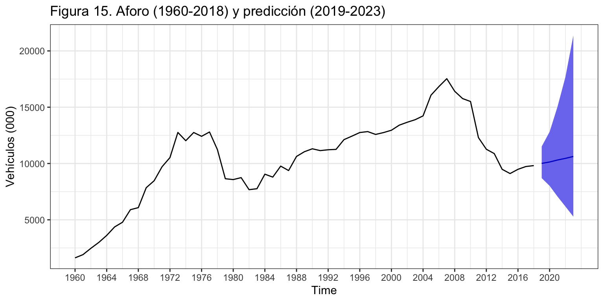
Validación con origen de predicción móvil
Vamos a calcular el error extra-muestral según el horizonte temporal de previsión. En este caso, la presencia de variables de intervención y la posibilidad de que la función Arima falle a la hora de estimar los parámetros hace el código algo más complejo.
Asumiremos que se precisan 30 años para estimar el modelo, fijaremos el horizonte temporal en 5 años y calcularemos el error MAPE, que para la predicción intra-muestral era de 5.7%.
k <- 30
h <- 5
T <- length(aforo)
s <- T - k - h
mapeArima <- matrix(NA, s + 1, h)
X <- data.frame(cbind(d1979, d2011))
for (i in 0:s) {
train.set <- subset(aforo, start = i + 1, end = i + k)
test.set <- subset(aforo, start = i + k + 1, end = i + k + h)
X.train <- data.frame(X[(i + 1):(i + k),])
hay <- colSums(X.train)
X.train <- X.train[, hay>0]
X.test <- data.frame(X[(i + k + 1):(i + k + h),])
X.test <- X.test[, hay>0]
if (length(X.train) > 0) {
fit <- try(Arima(train.set,
order = c(2, 1, 0),
xreg=as.matrix(X.train)))
} else {
fit <- try(Arima(train.set,
order = c(2, 1, 0)))
}
if (!is.element("try-error", class(fit))) {
if (length(X.train) > 0)
fcast <- forecast(fit, h = h, xreg = as.matrix(X.test)) else
fcast <- forecast(fit, h = h)
mapeArima[i + 1,] <- 100*abs(test.set - fcast$mean)/test.set
}
}
mapeArima <- colMeans(mapeArima, na.rm = TRUE)
mapeArima[1] 5.782527 9.589675 14.774650 19.458344 23.278878El error de previsión extra-muestral crece notablemente con el horizonte temporal. El error de las previsiones a un año vista es del 5.8%, prácticamente igual al error intra-muestral, pero para dos años vista casi alcanza el 10% y a cinco años vista supera el 20%.
7.3 Consumo de alimentos en el hogar per cápita
Analizaremos el consumo alimentario en hogar per cápita en España. Esta serie está construida a partir de la serie de consumo alimentario en hogar (disponible en el Ministerio de Agricultura, Alimentación y Medio Ambiente), y la serie de población (disponible en el Instituto Nacional de Estadística). Es una serie anual de 1987 a 2018 (32 datos) y la unidad es el Kg per cápita. La figura 16 muestra que es una serie estacionaria.
alimentospc <- read.csv2("./series/alimentacionpc.csv", header = TRUE)
alimentospc <- ts(alimentospc, start = 1987, freq = 1)
autoplot(alimentospc,
xlab = "",
ylab = "Kg per cápita",
main = "Figura 16. Consumo alimentario en hogar",
ylim = c(0, 700))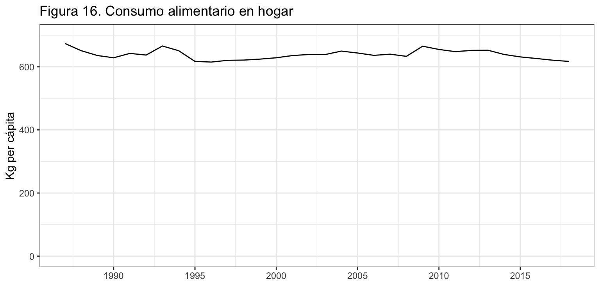
Transformación de la serie
La figura 17 indica que la serie original ya es estacionaria y la función ndiffs lo corrobora. Por tanto asumimos que \(d=0\) o \(\log(alimentospc_t) \sim I(0)\).
autoplot(alimentospc, xlab = "", ylab = "", main = "Alimentos")
autoplot(diff(alimentospc), xlab = "", ylab = "", main = "Diferencia alimentos")
ggAcf(alimentospc, xlab = "", ylab = "FAC", main = "")
ggAcf(diff(alimentospc), xlab = "", ylab = "FAC", main = "")
ndiffs(alimentospc)[1] 0Identificación y Estimación
Para identificar los valores de \(p\) y \(q\) veremos que nos sugiere auto.arima :
auto.arima(alimentospc)Series: alimentospc
ARIMA(1,0,0) with non-zero mean
Coefficients:
ar1 mean
0.6477 639.2512
s.e. 0.1561 5.7083
sigma^2 estimated as 153: log likelihood=-125.13
AIC=256.26 AICc=257.12 BIC=260.66La identificación automática sugiere un proceso AR(1) con constante y ambos coeficientes parecen significativos –su valor supera dos veces su error estándar.
Vamos a ver la gráfica de los residuos de este proceso para identificar rápidamente si hay valores extremos (figura 18).
arima100 <- Arima(alimentospc,
include.constant = TRUE,
order = c(1, 0, 0))
error <- residuals(arima100)
sderror <- sd(error)
autoplot(error, series="Error",
colour = "black",
xlab = "",
ylab = "Error",
main = "Figura 18. Error + Intervención") +
geom_hline(yintercept = c(-3, -2, 2, 3)*sderror,
colour = c("red", "green", "green", "red"),
lty = 2) +
geom_point() +
scale_x_continuous(breaks= seq(1987, 2018, 3))
#time(alimentospc)[abs(error) > 2 * sderror]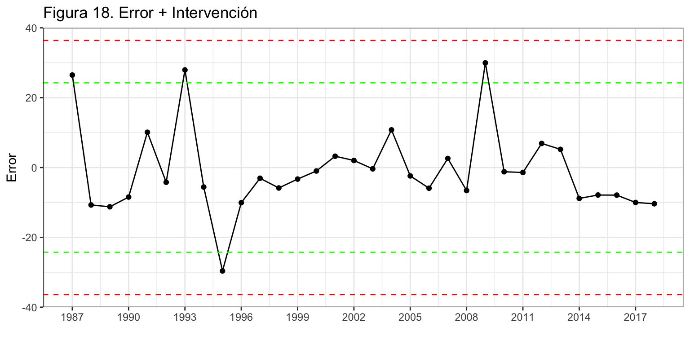
Hay dos posibles valores extremos en los años 1995 y 2009. Además, tras incluirlas y estimar el nuevo modelo aparece otra variable de intervención para 1993. Aunque ninguna supera las 2.5 desviaciones típicas, su efecto es significativo.
d1993 <- 1* (time(alimentospc) == 1993)
d1995 <- 1* (time(alimentospc) == 1995)
d2009 <- 1* (time(alimentospc) == 2009)
arima100 <- Arima(alimentospc,
include.constant = TRUE,
order = c(1, 0, 0),
xreg = cbind(d1993, d1995, d2009))
arima100Series: alimentospc
Regression with ARIMA(1,0,0) errors
Coefficients:
ar1 intercept d1993 d1995 d2009
0.7954 639.1924 21.9437 -15.8735 21.3839
s.e. 0.1383 7.2190 7.2137 7.2139 7.2137
sigma^2 estimated as 100.5: log likelihood=-116.96
AIC=245.92 AICc=249.28 BIC=254.71Validación
Tanto \(\phi_1\) como el intercepto \(\mu\) y las variables de intervención son significativas.
wald.test(b = coef(arima100), Sigma = vcov(arima100), Terms = 1)Wald test:
----------
Chi-squared test:
X2 = 33.1, df = 1, P(> X2) = 0.000000009wald.test(b = coef(arima100), Sigma = vcov(arima100), Terms = 2)Wald test:
----------
Chi-squared test:
X2 = 7839.9, df = 1, P(> X2) = 0.0wald.test(b = coef(arima100), Sigma = vcov(arima100), Terms = 3)Wald test:
----------
Chi-squared test:
X2 = 9.3, df = 1, P(> X2) = 0.0024wald.test(b = coef(arima100), Sigma = vcov(arima100), Terms = 4)Wald test:
----------
Chi-squared test:
X2 = 4.8, df = 1, P(> X2) = 0.028wald.test(b = coef(arima100), Sigma = vcov(arima100), Terms = 5)Wald test:
----------
Chi-squared test:
X2 = 8.8, df = 1, P(> X2) = 0.003Consideraremos que \(alimentospc_t \sim ARIMA(1,0,0)\) con constante e intervención.
Medidas de error
El error medio es 9.2 Kg per cápita (RMSE) y el error porcentual medio (MAPE) es 1.2%.
accuracy(arima100) ME RMSE MAE MPE MAPE MASE ACF1
Training set -1.29 9.21 7.59 -0.22 1.19 0.8 0.04Interpretación del modelo
El modelo teórico identificado es: \[(1 - \phi_1 L) alimentospc_t = c + \gamma_1 d1993 + \gamma_2 d1995 + \gamma_3 d2009 + \varepsilon_t,\] que desarrollando queda: \[alimentospc_t = c + \phi_1 alimentospc_{t-1} + \gamma_1 d1993 + \gamma_2 d1995 + \gamma_3 d2009 + \varepsilon_t.\]
Finalmente, el modelo estimado es: \[\widehat{alimentospc}_t = 129.5 + 0.80 \cdot alimentospc_{t-1} + 21.94\cdot d1993 - 15.87\cdot d1995 +21.38\cdot d2009\]
Observación: El término contante \(\mu\) que estima R no el valor “c” que hemos visto en la teoría. Para convertir la contante estimada por R en “c” hemos de multiplicarla por el polinomio autorregresivo. En este caso, \[c = \mu \cdot (1 - \phi_1) = 639.1924\cdot(1 - 0.7974) = 129.5\]
Cada año el consumo de alimentos per cápita en el hogar es 129.5 kilos más un 80% del consumo del año pasado.
En 1993 y 2009 el consumo medio de alimentos per cápita fue entre 21 y 22 kg. superior a los esperado, mientras que el 1995 fue 16 kg. menor de lo esperado.
Predicciones de la serie
parima100 <- forecast(arima100,
h = 5,
level = 95,
xreg = cbind(rep(0, 5), rep(0, 5), rep(0, 5)))
parima100 Point Forecast Lo 95 Hi 95
2019 621.4614 601.8087 641.1140
2020 625.0895 599.9784 650.2006
2021 627.9752 599.9549 655.9956
2022 630.2705 600.5563 659.9846
2023 632.0961 601.3586 662.8336Puedes comprobar que cada valor de la predicción se ha obtenido a partir del modelo estimado, donde \(alimentospc_{t-1}\) se sustituye por la predicción del año precedente.
autoplot(parima100,
ylab = "Kilos per cápita",
main = "Figura 19. Consumo de alimentos y predicción") +
scale_x_continuous(breaks= seq(1987, 2023, 4)) 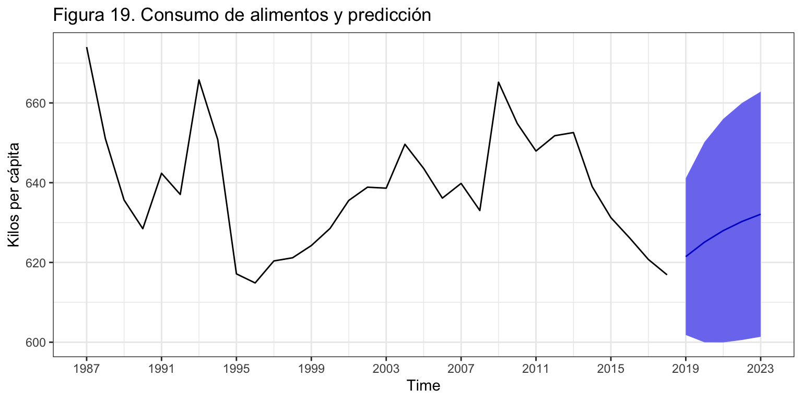
7.4 Comparación con alisado exponencial
Veamos una comparativa, para los tres ejemplos vistos, entre los resultados obtenidos con ARIMA y con Alisado exponencial.
- Libros:
MAPE ARIMA: \(7.02\%\) - ARIMA(0,1,0) sin deriva
MAPE ETS: \(7.05\%\) - ETS(M,N,N), \(\alpha=1\)
Ambos métodos han estimado el mismo modelo.
- Aforo:
MAPE ARIMA: \(5.72\%\) - ARIMA(2,1,0) sin deriva, con intervención
MAPE ETS: \(6.18\%\) - ETS(M,A,N), \(\alpha=1\), \(\beta=0.10\)
Cada método estima un modelo diferente
ARIMA tiene menor error a costa de incluir variables de intervención
- Alimentos per cápita:
MAPE ARIMA: \(1.19\%\) - ARIMA(1,0,0) con constante e intervención
MAPE ETS: \(1.43\%\) - ETS(M,N,N), \(\alpha = 0.98\)
Cada método ha estimado un modelo diferente
ARIMA tiene menor error a costa de incluir variables de intervención
8 Resumen de los comandos utilizados
| Función | Paquete | Descripción |
|---|---|---|
Arima |
forecast | estima un proceso ARIMA |
auto.arima |
forecast | identificación automática de un modelo ARIMA |
wald.test |
aod | contrasta la significatividad conjunta de varios parámetros |
forecast |
forecast | realiza una predicción de un modelo |
9 Referencias
- Box, G. E.P. y Jenkins, G. (1976). Time Series Analysis: Forecasting and Control Editado por Holden-Day, San Francisco, CA